Speakers
Speakers are listed alphabetically by first name. Photos and affiliations marked [TBA] are placeholders — pending information from the speaker, to be added later.
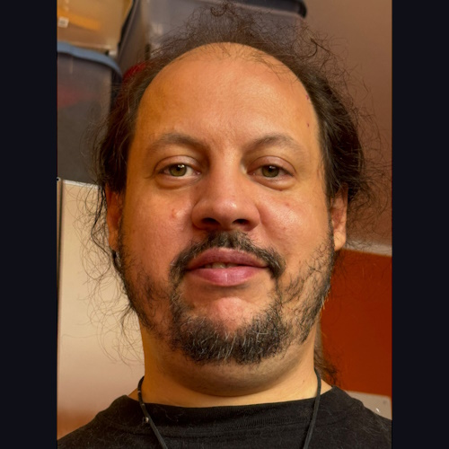
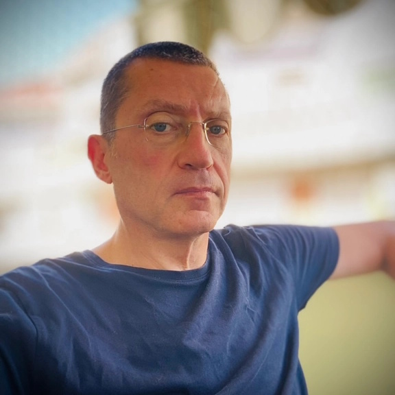
Alfonso Pierantonio
SESSION
Arjan Oortgiese
Model Driven Software Engineer at
Belastingdienst
SESSIONS
Open-sourcing ALEF opens the door for a model-driven law
execution for the Dutch government (and maybe also
Europe)
Are we doing better than in the 90s? (Panel)
Are we doing better than in the 90s? (Panel)
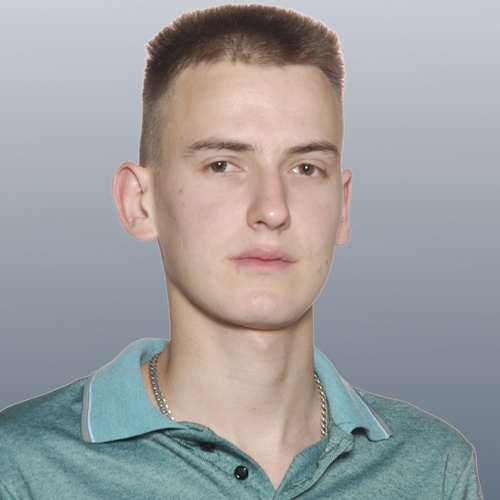
Ignacio González Peris
SESSION
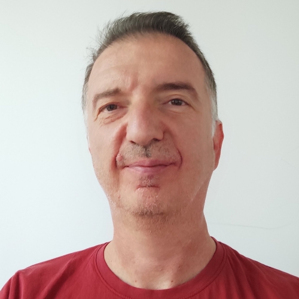
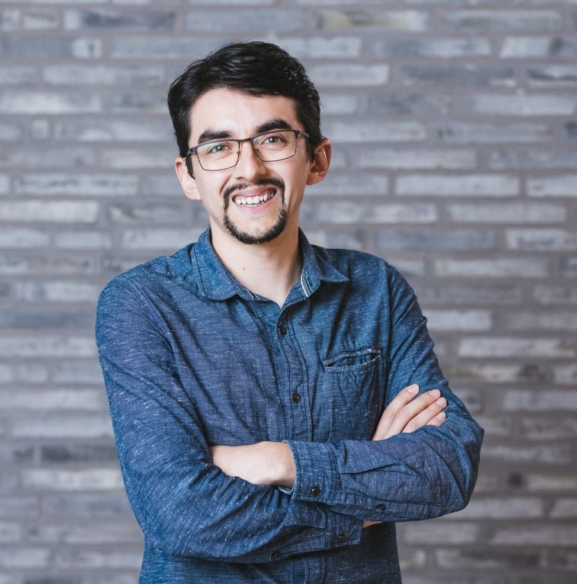
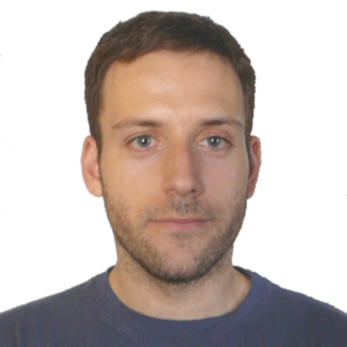
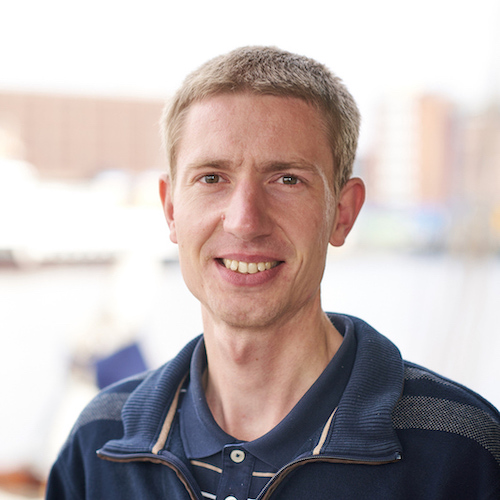
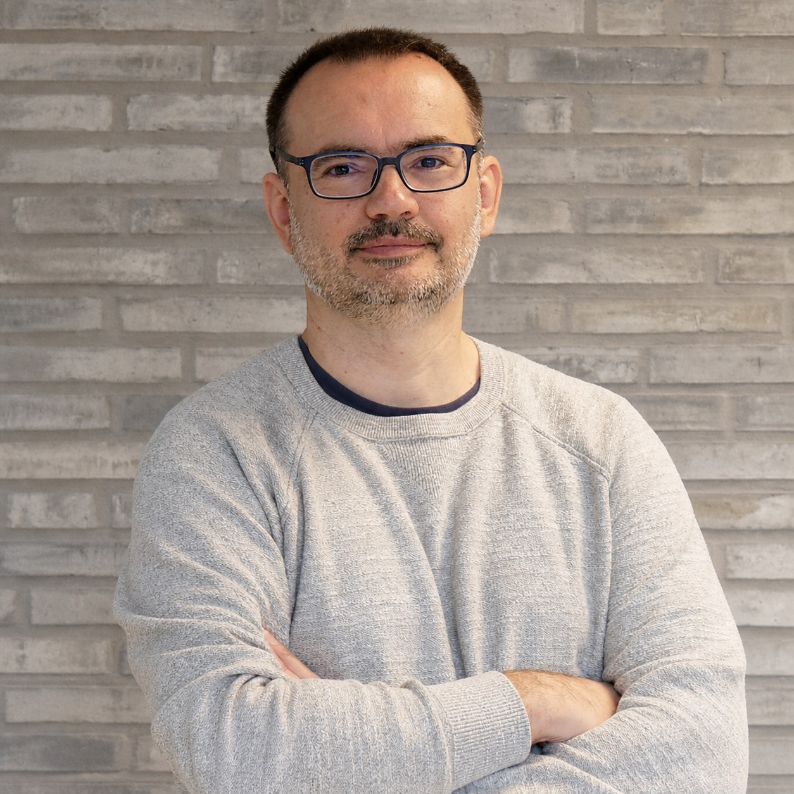
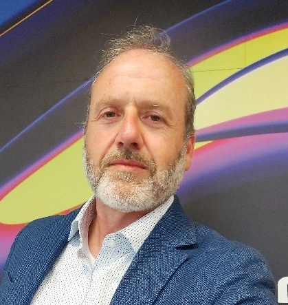
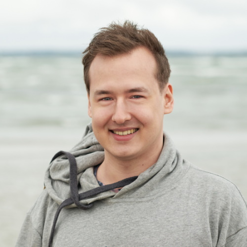
Mark Sujew
SESSION
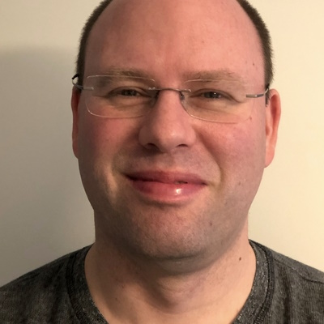
Mikhail Razakov
Creator of UniversalToolchain / Wist2
SESSION
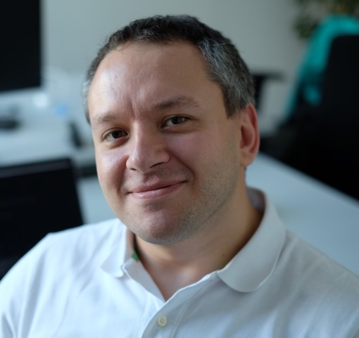
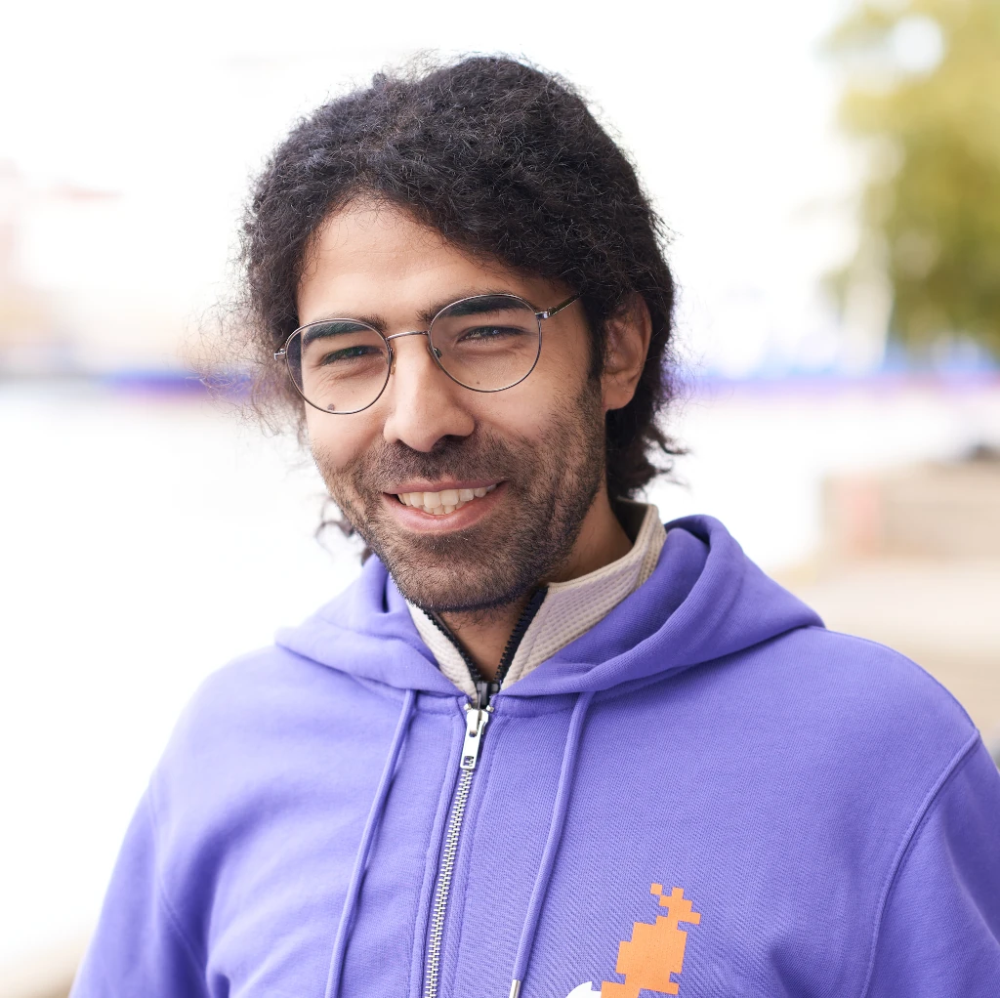
Ulyana Tikhonova, PhD.
SESSION